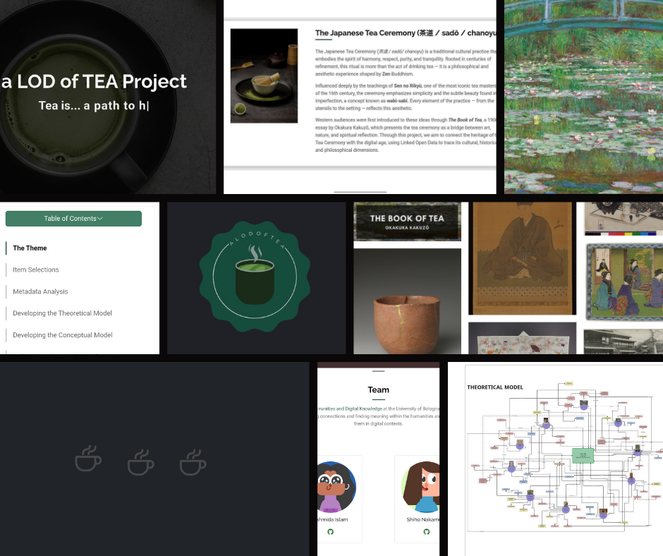
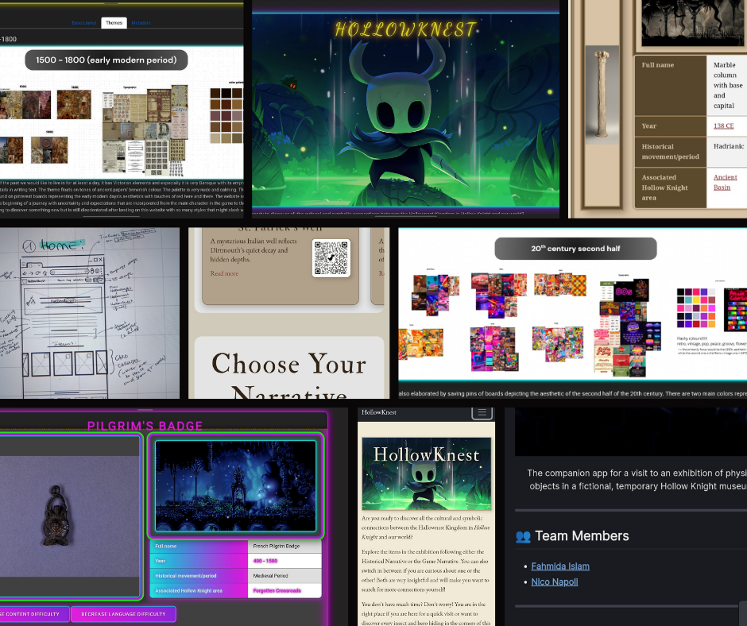
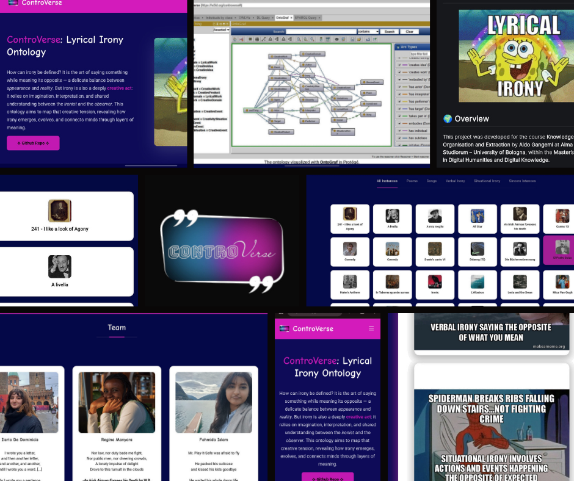
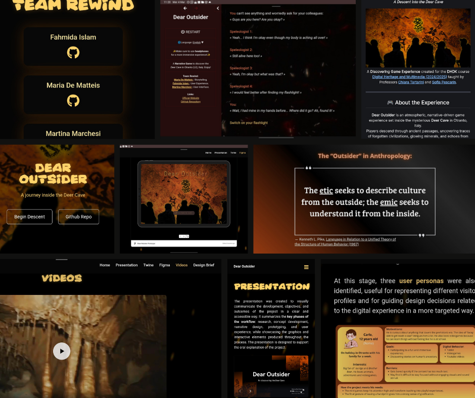
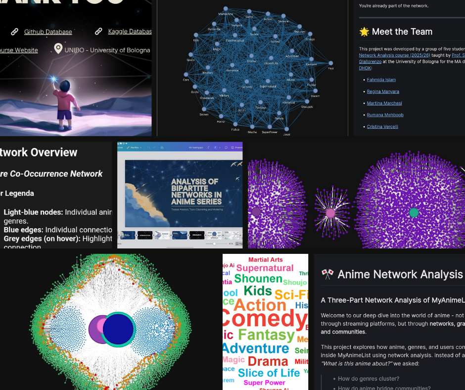
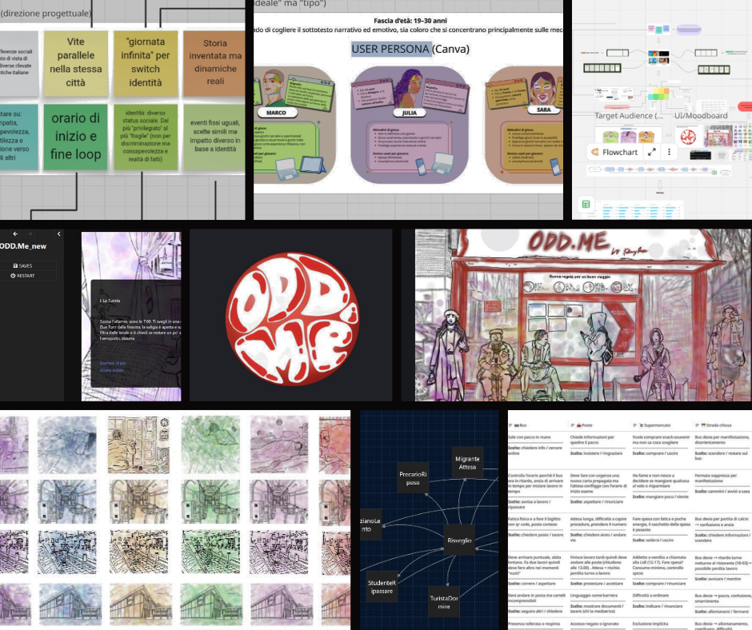
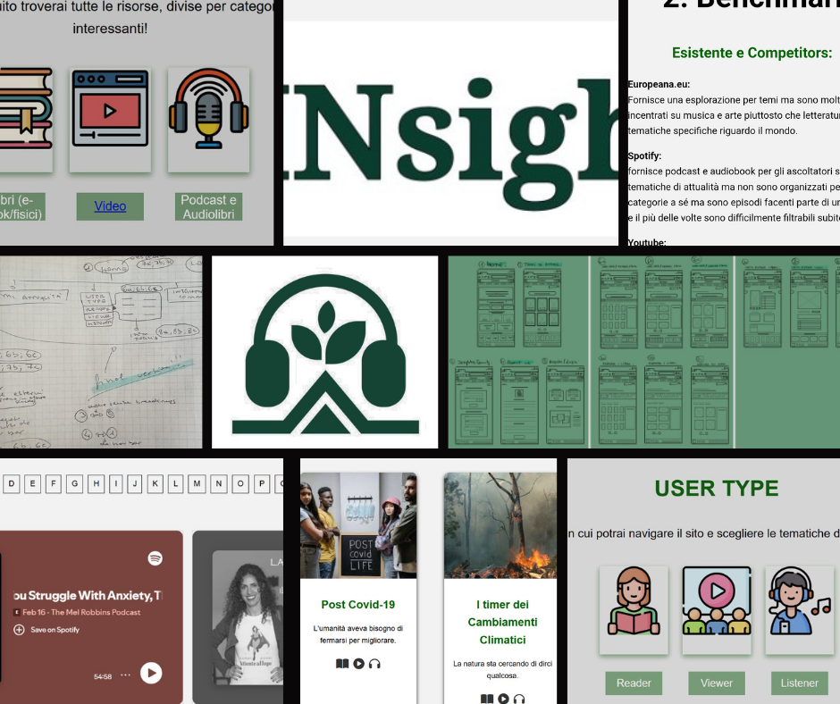
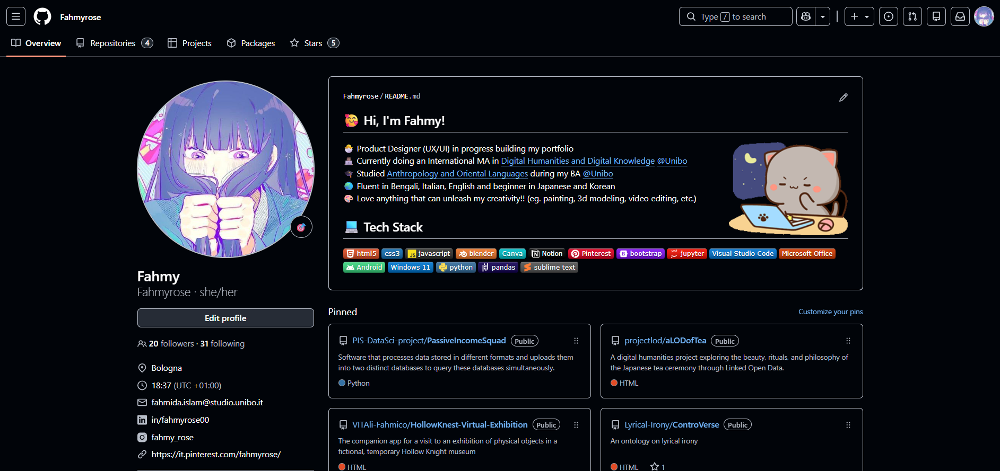

PROJECTS
A collection of projects crafted through experimentation, design thinking and modern web technologies.

aLODofTEA
A digital humanities project translating The Book of Tea into an interactive experience. Through information design, semantic data, and visual storytelling, complex cultural knowledge becomes accessible through a carefully crafted interface.

HollowKnest
A companion web app designed for a fictional museum exhibition inspired by Hollow Knight. Through interactive narratives, themed visual interfaces and QR-based exploration, the project transforms game lore and cultural references into an engaging museum-style digital experience.

ControVerse
An ontology project exploring the relationship between irony and creativity as a shared process of interpretation and meaning-making. Through information architecture, conceptual modeling, and a visually structured web interface, the project transforms theoretical research into an interactive and accessible digital experience for exploring lyrical irony.

Dear Outsider
A narrative-driven digital experience set inside the Deer Cave of Otranto, where players explore traces of forgotten civilizations through an immersive journey. Through environmental storytelling, atmospheric interface design, and interactive narrative paths, the project transforms archaeological inspiration into a visually driven and exploratory digital experience.

MAL Network Analysis
A network analysis project exploring how anime, genres, and users connect on MyAnimeList, revealing hidden communities and patterns. Through interactive network visualizations, genre mapping, and user-centric interface design, the project transforms complex dataset relationships into an accessible and engaging digital exploration of anime culture.

ODD.Me
A narrative-driven Italian web-game experience, exploring social differences through multiple identities in the same city. Through interactive role-switching, choice-based storytelling and empathetic interface design, the project encourages awareness, kindness, and reflection on how identical events affect people differently depending on social status.

INsight
INsight (Italian) is a digital library web experience designed to help users explore current events through books, videos, and podcasts, empowering them to choose how to learn. As my first website, it is not yet responsive and requires further development, but it already demonstrates my UX-focused approach, information architecture, and empathetic interface design, serving as a personal starting point that will evolve with future iterations.
More Projects
Click on the image below to check out other projects on my GitHub profile.

Go to RESUME page to discover Job related projects and works 😊
Contact Me
Thanks for visiting my portfolio 🤍 Don’t hesitate to contact me for collaborations, projects, or just to say hello!
Chat With Me

LINE